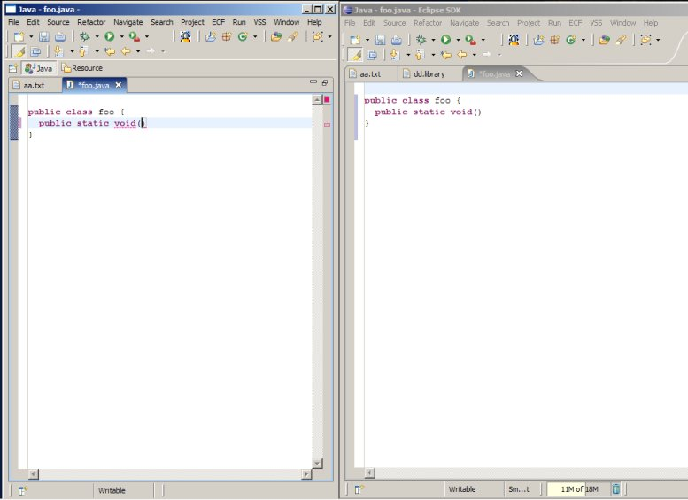
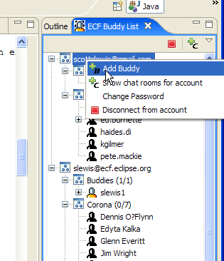
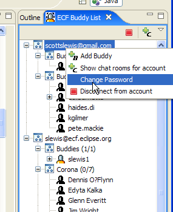

|
ECF New and Cool Things |
|
New Example App: Real-time Shared Text Editing
|
There is a new example plugin: org.eclipse.ecf.example.collab.editor. This plugin provides an example
of real-time shared editing of text files. See here to download and install
(see "Shared Text Editor"), and
here for an explanation of how to
setup and run this example application.

|
|
Add Buddy Menu Item
|
There is now an 'Add Buddy' menu item in the context menu for accounts
in ECF buddy list view. This supports the sending of an authorization request to
a propective buddy.

|
|
Change Password Menu Item
|
There is now an 'Change Password' menu item in the context menu for accounts
in ECF buddy listview. This supports the changing of a password on XMPP servers.

|
|
ECF API Additions and Changes |
|
New Extension Point: org.eclipse.ecf.startup
|
There is now a new ECF extension point org.eclipse.ecf.startup. This extension point allows plugins to be
called in a separate Job during ECF startup. This so that ECF client applications can create IContainer
instances and connect to remote services upon ECF startup. Extensions must implement the
IECFStart interface.
Upon ECF start, the startup method will be called via a separate Thread/Job.
Here's an example extension definition for this extension point:
<extension
point="org.eclipse.ecf.startup">
<ecfstart
class="org.eclipse.ecf.example.collab.start.CollabStart"/>
</extension>
At ECF startup time the org.eclipse.ecf.example.collab.start.CollabStart.startup method will be called by a new Job. The ProgressMonitor
parameter will be non-null.
|
|
Removed unnecessary method in org.eclipse.ecf.core.events.ISharedObjectActivatedEvent
|
Previously, ISharedObjectActivatedEvent
had a method getGroupMemberIDs(). This method is superfluous so removed from ISharedObjectActivatedEvent and implementing class org.eclipse.ecf.core.events.SharedObjectActivatedEvent.
|
|
Made IContainerEvent notifications for ISharedObjectContainer consistent
|
Made the IContainer event notifications include shared object activated (ISharedObjectActivatedEvent), deactivated (ISharedObjectDeactivatedEvent)
consistent and added to org.eclipse.ecf.provider implementation the appropriate construction and delivery of these events via any listeners
added to the IContainer via IContainer.addListener
|
|
Refactored Presence API
|
Refactored the interfaces in the org.eclipse.ecf.presence API, specifically in the
org.eclipse.ecf.presence.chat package
Changes to IChatRoomManager
Changes to IRoomInfo
Now, the typical way to connect to a chat room is shown by this example code:
IRoomInfo roominfo = chatroommanager.getChatRoomInfo("roomname");
IChatRoomContainer chatroom = roominfo.createChatRoomContainer();
chatroom.connect(roominfo.getRoomID(),null);
|